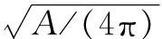

运动方程的爱因斯坦形式——在弯曲的时空中固有时应为极大——在低速情况下给出的结果与牛顿定律给出的相同。当库珀（G. Cooper）绕地球做圆周运动时，他的表指示的时间比沿任何其他的、你们对他的人造卫星可能想象到的路径指示的时间都要长 [7] 。
所以引力定律可以用这种非凡的方法、利用时空的几何概念来表述。粒子总是取最长的固有时——在时空中与“最短距离”这个量相似。这是引力场中的运动定律。用这种方法表述的最大优点在于：定律不依赖任何坐标或任何别的定义位置的方法。
现在把上面所做的事情作一小结。我们已经给了你们关于重力的两个 定律：
（1）当存在物质时，时空的几何学如何变化——即，利用逾半径表示的曲率正比于球内部的质量，方程式（42.3）。
（2）在仅存在引力的条件下，物体如何运动——即物体的运动总是使得在两个边界条件之间的固有时为极大。这两个定律与我们早先知道的相似的一对定律相对应。原来，我们用牛顿的平方反比的引力定律及他的运动定律来描述引力场中物体的运动，现在，定律（1）和（2）代替了它们。新的一对定律也与我们在电动力学中知道的定律相对应。那里的定律——麦克斯韦方程组——决定电荷产生的场。它告诉我们“空间”的特征如何因带电物质的存在而改变，对于重力的情况，这种变化是由定律（1）完成的。另外，还有一个关于粒子如何在给定场中运动的定律——d（mv）/dt=q（E+v×B）。对于重力来说，这是由定律（2）处理的。
在定律（1）和（2）中包含了关于爱因斯坦引力理论的精确表述——虽然你们通常会发现它被表述为更复杂的数学形式。然而，我们应该做进一步的补充。正如引力场中的时间标度逐处变化一样，长度标度也会做同样的变化。当你们到处运动时尺会改变其长度。由于空间和时间如此密切地混合在一起，因此随时间发生的某些事情，要是不以某种方式在空间中反映出来是不可能的。举一个更加简单的例子：设你们正在空中飞过地球，从你们 的观点来看所谓时间 ，在我们 看来部分是空间，所以也必定存在空间方面的变化。因物质存在而引起的是整个时空的弯曲，这比仅仅在时间范围内的变化更加复杂。然而，只要清楚知道关于空间弯曲的这个规则不仅从一个人的观点来看是适用的，而且对每个人来说也是正确的，那么在式（42.3）中给出的规则足以完全确定所有的引力定律。当某人从一个质量较大的物质旁飞过时，他会看到不同的质量值，这是由于他对从旁边通过他的该物质计算动能引起的，而他必须把与该能量相对应的质量包括进去。必须把理论安排得使每个人——不论他如何运动——当他接近一个星球时，会发现逾半径等于G/（3c2 ）乘上星球包含的总质量［或者，更好地讲是G/（3c4 ）乘星球包含的总能量值］。这个定律——定律（1）——在任何运动系统内都应该是正确的，这是伟大的引力定律之一，称为爱因斯坦场方程 。另一个伟大定律是定律（2）——物体必须这样运动，使得固有时为极大——这被称为爱因斯坦运动方程 。
把这两个定律写成一个完整的代数式，把它们与牛顿定律进行比较，或者把它们与电动力学联系起来，在数学上是很困难的。但它是今天我们所看到的关于引力物理方面最完整的定律的样式。
虽然对于所考虑的简单例子，它们给出与牛顿力学相一致的结果，但它们并不始终相符。首先由爱因斯坦导出的三个差异已经在实验上得到了证实：水星轨道并不是固定的椭圆；光通过太阳附近时发生的偏折是我们原来认为的大小的两倍；钟的快慢取决于它们在引力场中的位置。每当爱因斯坦的预言与牛顿力学的概念不同时，大自然选择的总是爱因斯坦。
让我们把已说过的每件事以下述方式做一小结。首先，时间和距离的量值决定于你测量它时在空间的位置和时间，这与时空是弯曲的表述等价。根据测得的一个球体的表面积就可以确定预期半径，即 ，但实际的测量半径将有一个超过这半径的逾，逾半径正比于（比例常数为G/c2 ）球内部所包含的总质量。这个逾半径确定了时空曲率的恰当度数。不论谁在观察物质，也不论物质在如何运动，曲率必定是相同的。第二，在这种弯曲的时空中，粒子沿“直线”（最大固有时轨道）运动。这就是引力定律的爱因斯坦公式的内容。
[1] 无限远点除外。
[2] 译者注：原著为：So C/2π is now less than r。有误。
[3] 为了完整起见，我们应该再补充一点。如果你想把弯曲空间的热板模型应用到三维的情况，你必须想象尺的长度不仅取决于你把它放在何处，而且也取决于尺在安置时的取向。这是一种简单情况的推广，在这种简单情况下，尺的长度决定于它所处的位置而不管它取南北方向还是东西方向，或上下方向，其长度都是相同的。如果你想用这种模型的任意几何图形来表示三维空间，那么这种推广是必要的，虽然它对于二维情况很可能是不必要的。
[4] 没有人知道，即使爱因斯坦也不知道，如果质量变得集中到点上该怎么处理。
[5] 这是近似，因为密度并不是像我们假设的那样与半径无关。
[6] R. V. Pound and G. A. Rebka，Jr.，Physical Review Letters Vol . 4，P. 337（1960）。
[7] 严格地说，它仅仅是一种局域 极大。应该说固有时比任何相邻 路径上的固有时要长。例如，在绕地球的椭圆轨道上的固有时，与一个被发射得很高而下落物体的弹道路径上的固有时相比，前者不一定更长。